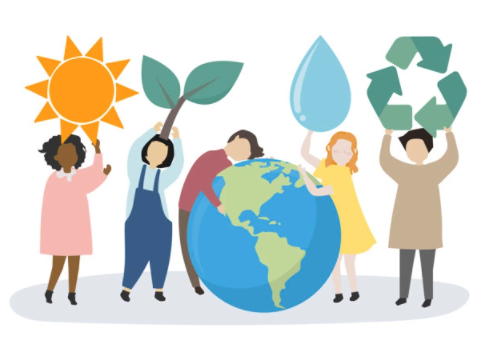

Não é mais nenhum segredo que as mudanças climáticas e agressão ao meio ambiente estão entre as ameaças mais graves à humanidade e, se nada for feito, em poucos séculos a Terra como conhecemos pode deixar de existir. Mas não importa o quanto se fale no assunto, pouca gente parece perceber ou compreender o que podem fazer de fato para mudar a situação. Não é preciso muito: atitudes simples no dia a dia podem ajudar a minimizar os danos causados no meio ambiente.
Comece trocando as lâmpadas por modelos eficientes — se cada casa nos Estados Unidos fizesse isso, por exemplo, o país reduziria o mesmo nível de poluição que se tirasse 1 milhão de carros das estradas. Em seguida, preste atenção para não deixar luzes acesas em cômodos que não estão sendo utilizados e desligue o computador durante a noite. Nas tarefas domésticas, busque ser mais eficiente, por exemplo, esperando acumular roupas o suficiente para encher uma máquina antes de lavá-las.
Evite impressões desnecessárias: ingressos (quando há a opção de e-ticket), extratos de banco, via da compra no cartão, contas que podem ser pagas online… Nada disso precisa ser impresso. Ao usar papel para anotações, certifique-se de usá-lo por completo antes de reciclar. E, na hora de dar presentes, experimente reutilizar papéis antigos ou buscar novas formas criativas de embrulhá-los.
Você não precisa parar de comer carne, mas experimente deixar de consumir carne por somente um dia. São necessários 9,5 mil litros de água para produzir cada meio quilo de carne, e cada hambúrguer que vem de animais que pastam em áreas desmatadas causou a destruição de cinco metros quadrados de floresta.
Só de desligar a torneira ao escovar os dentes, por exemplo, é possível economizar 18 litros de água por dia. Experimente fazer o mesmo quando for ensaboar as mãos ou as louças na pia na hora de lavá-las parabeconomizar ainda mais.
Você já deve ter ouvido falar da ilha de plástico no Pacífico. Ela é formada por 4 milhões de toneladas de plástico e tem quase duas vezes o tamanho do estado de São Paulo. Reduzir o consumo de plástico no dia a dia é fundamental para reverter este cenário. Muitas cidades brasileiras já aboliram a sacola plástica no supermercado ou passaram a cobrar por ela para tentar limitar o consumo. Se não for o caso da sua, experimente levar as próprias sacolas ou uma mochila para colocar as compras. Tenha também a própria garrafinha para quando precisar tomar água: cerca de 90% das garrafas de plástico não são recicladas e acabam em aterros. E, se for usar copos plásticos em festas, tente lembrar qual é o seu ou adote a técnica de marcar o nome com uma caneta em vez de jogá-lo no lixo cada vez que for tomar algo.